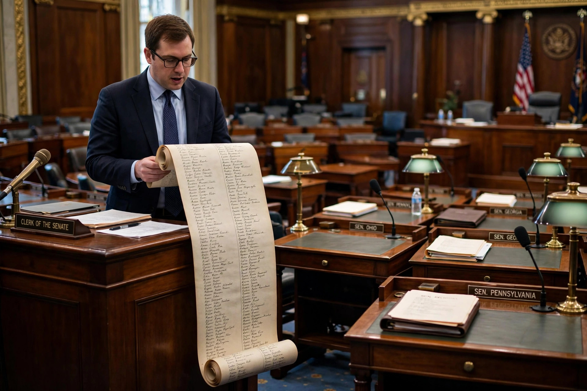

From Wikipedia, the free encyclopedia
| Quorum call | |
|---|---|
| Type | Parliamentary procedure |
| U.S. Senate quorum | 51 of 100 senators |
| U.S. House quorum | 218 of 435 members (when full) |
| Common use | Delay; allow negotiation or summon members |

A quorum call is a parliamentary procedure used to establish whether a quorum—the minimum number of members who must be present for a legislative body to conduct business—is in attendance. In the United States Senate, a senator may "suggest the absence of a quorum," prompting the clerk to call the roll of all one hundred senators. Constitutional majorities are required: 51 senators, and 218 representatives in the House when there are no vacancies.
Although nominally a check on attendance, the quorum call in modern Senate practice functions primarily as a delay device: because the roll is called slowly and members rarely answer, a quorum call suspends business while leaders negotiate behind the scenes, await the arrival of senators for a vote, or fill time during a talking filibuster. The majority leader typically asks unanimous consent to dispense with the call once its purpose is served. If a genuine call establishes that no quorum is present, the Senate may direct the sergeant at arms to compel the attendance of absent senators—an authority dramatically exercised in 1988, when Senator Bob Packwood was carried into the chamber by Capitol Police during a campaign-finance standoff.
Similar devices exist in other legislatures and assemblies, including calls of the house in state legislatures, some of which authorize locking the chamber doors until absent members are produced.